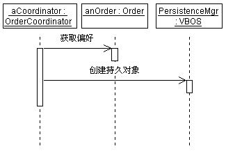
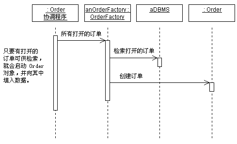
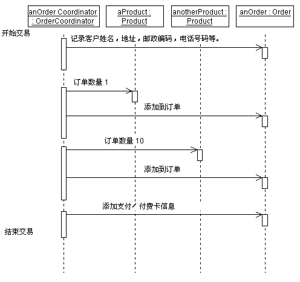
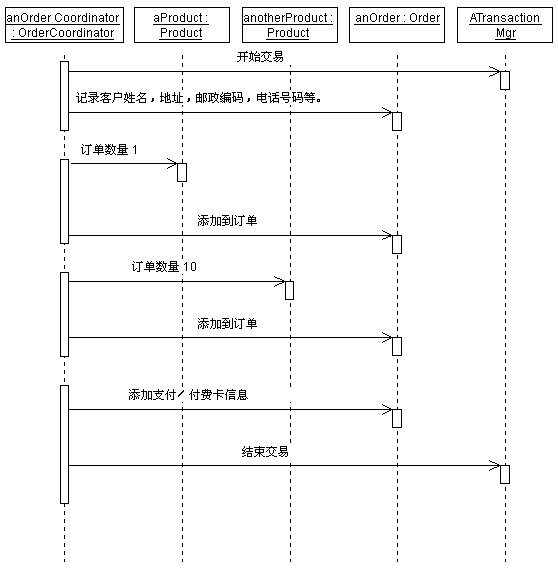
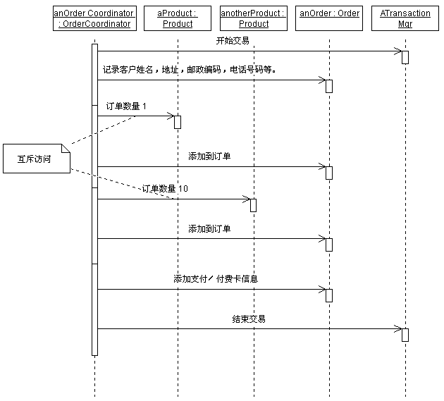

|
面向对象的范例的整体目标是封装实施详细信息。因此，就持久性而言，我们希望有一个与瞬时对象几乎相同的持久对象。不必注意该对象是否为持久对象，或将它与任何其他对象区别对待。至少这是目标。
实际上，有时应用程序可能需要控制持久性的多个方面：
-
读取和写入持久对象的时间
-
删除持久对象的时间
-
如何管理事务
-
如何完成锁定和并行控制
在这里要关心两种情况：最初将对象写入持久对象存储时，以及随后应用程序希望使用该对象的更改来更新持久对象存储时。
在任一种情况下，特定机制均依赖于持久性框架所支持的操作。通常，使用该机制是为了向持久性框架发送消息，以创建持久对象。一旦对象成为持久对象，持久性框架将充分智能地检测随后对该持久对象的更改，并在必要时（通常是在提交事务时）将它们写入持久对象存储。
创建中的持久对象示例如下所示：

对象 PersistenceMgr 是 VBOS 的一个实例，VBOS 是一个持久性框架。OrderCoordinator 创建永久 Order 的方法是将它作为“createPersistentObject”消息的实参发送到
PersistenceMgr。
通常没有必要显式地对此建模，除非需要知道该对象是在某一序列事件中的特定点显式存储的。如果后续操作需要查询该对象，则该对象必须存在于数据库中，因此就需要知道该对象将存在于数据库中。
在应用程序向持久对象发送消息之前，有必要从持久对象存储中检索该对象。记住，面向对象系统中的工作是通过向对象发送消息来执行的。但如果您希望发送消息的目标对象存在于数据库中而尚未存在于内存中，则会有一个问题：不能向尚不存在的事物发送消息！
简而言之，您需要向一个对象发送消息，该对象知道如何查询数据库、检索正确的对象并实例化该对象。然后，也只有在这之后，才能发送您原本打算发送的原始消息。实例化持久对象的对象有时称为工厂对象。工厂对象负责创建对象的实例，包括持久对象的实例。给定一个查询，可以设计工厂来返回符合该查询的一个或多个对象的集合。
通常，对象通过它们的关联充分地互相连接，所以通常只需要检索对象图中的根对象；其余的对象则根据它们与根对象的关联而基本上透明地从数据库中“拉”出。（良好的持久性机制对此应足够智能：它仅在需要时检索对象；否则，可能最终会不必要地尝试实例化大量对象。
在需要对象之前检索对象，这是过于简单的持久性机制所引起的主要性能问题之一）。
以下示例显示可如何对从持久对象存储中检索对象进行建模。在实际的时序图中，不会显示 DBMS，因为它将封装在工厂对象中。

持久对象的问题在于它们是持久存在的！与瞬时对象不同，瞬时对象在创建了它们的进程停止运转之后就消失了，而持久对象一直存在到它们明显被删除为止。所以，删除不再使用的对象是很重要的。
问题在于，这是很难确定的。只因为对一个对象执行了一个应用程序，并不表示所有应用程序（目前的和将来的）都已执行。而且，因为对象可以并确实具有甚至它们自己都不知道的关联，所以要断定是否可删除某个对象并不总是这么容易的。
在设计中，可以使用状态表图从语义上表示该情况：当对象达到结束状态时，可以认为其已释放。负责实施永久类的开发人员然后可以使用状态表图信息调用适当的持久机制行为，以释放该对象。用例实现设计人员的职责是调用适当的操作，以在对象适于删除时使该对象达到其结束状态。
如果某一对象充分连接到其他对象，则可能难以确定是否可删除该对象。因为工厂对象知道对象的结构以及其连接的其他对象，所以让某一类的工厂对象负责确定是否可删除特定实例常常很有用。持久性框架也可提供对该能力的支持。
事务定义一组元操作调用；要么全部执行它们，要么全都不执行。在持久性环境中，一个事务定义了对一组对象的一组更改，这些更改要么全都执行，要么全都不执行。事务提供一致性，确保几组对象从一种状态转移到另一种状态。
在用例实现中，有几个选项可用于显示事务：
-
文本。在时序图的页边空白处使用脚本，则可记录事务边界，如下所示。该方法很简单，并允许使用任意数量的机制来实施事务。

使用文本注释来表示事务边界。
-
使用显式消息。如果使用中的事务管理机制使用显式消息开始和结束事务，则可以在时序图中明确地显示这些消息，如下所示：

显示显式消息的时序图，这些消息用以启动和停止事务。
如果无法执行某一事务中指定的所有操作（通常是因为发生了错误），该事务将异常终止，并且在该事务期间所作的所有更改都会撤消。预期的错误条件常常代表了用例中的异常事件流。在其他情况下，可能因为系统中的某个故障而发生错误情况。错误情况还应在交互中记录。简单的错误和异常可以在发生这些错误和异常的交互中显示；复杂的错误和异常则可能需要它们自身的交互。
特定对象的故障模式可以在状态表图中显示。可以在发生错误或异常的交互中，显示处理这些故障模式的条件控制流。
并行描述在事务过程中对关键系统资源的访问控制。为了保持系统处于一致状态，某一事务可能要求它对系统中的某些关键资源具有单独访问权。这种独占性可能包括读取一组对象、写入一组对象或读写一组对象的能力。
看一个简单的例子，即，为什么可能需要限制对一组对象的访问。假设我们正运行一个简单的订单输入系统。人们拨入电话来下订单，我们反过来又处理订单并发送订单。可以将订购看成一种事务。
为说明并行控制的需要，假设有人拨入电话来订购一双新的旅游鞋。订单输入系统后，系统将检查库存清单中是否有该顾客需要的、合适尺寸的旅游鞋。如果有，则希望预订这双鞋，这样，在订单送出之前别人就不能购买它。
一旦发出了订单，这双鞋就从库存清单中除去。
在下订单和发出订单的间隔时间内，这双鞋处于特殊状态 －
它在库存清单中，但已“提交到”客户的订单。如果由于某重原因而取消了客户订单（客户改主意了，或其信用卡已到期），这双鞋将回到库存清单中。一旦发出了该订单，则假定我们的小公司不想保留曾对这双鞋做下的记录。
并行的目标和事务一样，就是确保系统从一个一致状态转移到另一个。另外，并行工作尽力确保某一事务具有完成其工作所需要的所有资源。 可以用大量的不同方法实施并行控制，包括资源锁定、信号、共享内存锁存器以及专用工作空间。
在面向对象系统中，仅根据消息模式来断定特定消息是否会导致对象发生状态更改是比较困难的。另外，多种实施可避免限制访问某些类型的资源；例如，某些实施在事务开始时向每个事务提供其自身的系统状态视图。在这种情况下，其他进程可更改对象状态而不影响任何其他执行事务的“视图”。
为避免约束实施，在设计中我们只希望指出事务必须能够进行单独访问的资源。使用先前的示例，我们希望指出，我们需要对已订购旅游鞋的单独访问权。一种简单的备选方法是注释发送中的消息的描述，表明应用程序需要对该对象的单独访问权。然后实施者可使用这些信息来确定如何最好地实施并行需求。下面显示一个示例时序图，该图显示了关于哪些消息需要单独访问权的注释。假设条件是，完成事务后释放所有的锁。

显示时序图中有注释的访问控制的示例。
不限制对事务中所需所有对象的访问权的原因是，通常只有一些对象应具有访问限制；限制访问参与事务的所有对象，会浪费宝贵的资源，并可能引起（而非防止）性能瓶颈。
|